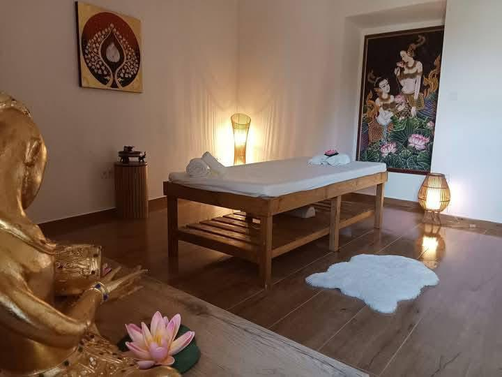

Historický dom, živé zážitky
Vitaj v Kráľovstve Skalica
Domov kávy, tela, oddychu a pohybu. Pod jednou strechou nájdeš rituály aj výlety.
Vyber si svoju cestuHistorický dom, živé zážitky
Domov kávy, tela, oddychu a pohybu. Pod jednou strechou nájdeš rituály aj výlety.
Vyber si svoju cestuČerstvo pražené zrná, rýchle balíčky a ranný rituál pripravený na klik.
Prejsť na kávuTichý priestor pre regeneráciu tela a mysle. Individuálny prístup, pokoj a čas len pre seba v centre Skalice.
Objaviť masážeIntímne apartmány nad Koloniálom s rannou kávou bez budíku – už čoskoro.
Zisti viacTrailové výjazdy v Zlatníckej doline a servisné zázemie priamo v Kráľovstve.
Naplánovať výjazdO Kráľovstve
Kráľovstvo Skalica je dom z roku 1650, v ktorom sme spojili remeselný Koloniál, thajské terapeutky, intimitu budúcich apartmánov a zázemie pre výjazdy do Zlatníckej doliny. Navštív nás, otvor jedny dvere a vyber si cestu, ktorá ti sedí práve dnes.
Ako to funguje dnes
Kráľovstvo nie je rezort ani program na celý deň. Je to historický dom, kde funguje káva, masáže a pohyb – každé v inom rytme.
Koloniál má svoje otváracie hodiny, masáže sú na dohodu a výjazdy či pobyty riešime individuálne.
Väčšina vecí sa u nás nedeje cez formuláre, ale osobne – rozhovorom, správou alebo telefonátom.

Ubytovanie
Pripravujeme tiché butikové ubytovanie priamo nad Koloniálom. Bez recepcie, bez ruchu, v historickom dome v centre Skalice.
Ak plánuješ zostať dlhšie, napíš nám – dostupnosť riešime osobne.
Napísať ohľadom ubytovania →Zlatnícka dolina
Kráľovstvo stojí na štarte trailov Zlatníckej doliny – doplň kofeín, zober picnic box a vráť sa na masáž. Jazdy organizujeme na mieru, štartuješ u nás.
Napíš nám